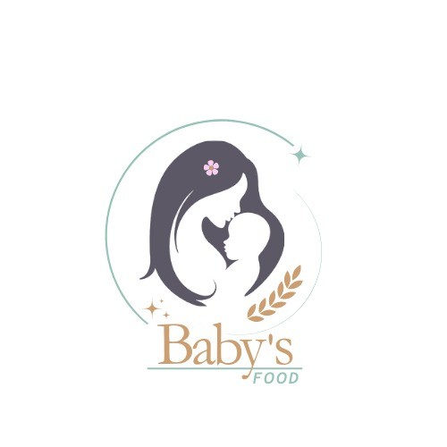
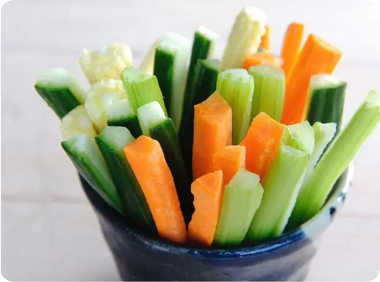
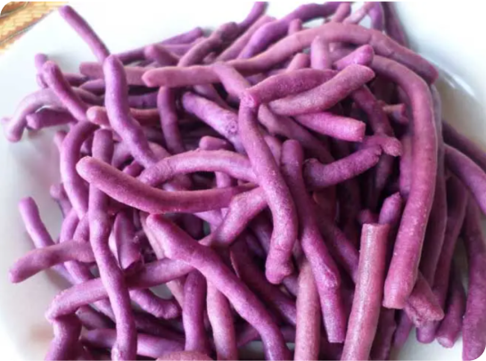
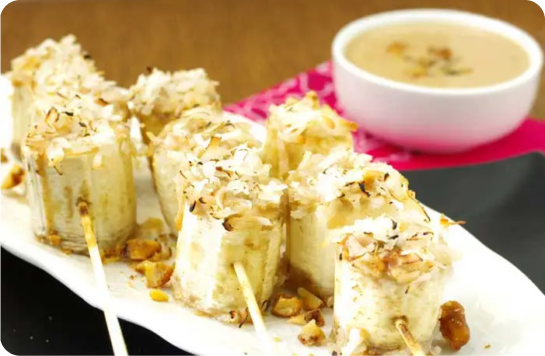

BABY'S FOOD
Home
About Us
MPASI
INFORMASI MPASI
RESEP NASI TIM MPASI
RESEP BUBUR MPASI
RESEP PURE MPASI
RESEP FINGER FOOD MPASI
Discuss
Contact
TIM MPASI FINGER FOOD
Sapa yang suka sayurr angkat kak
Stik Sayuran
Bahan
Wortel (60 g)li>
Buncis muda (60 g)
Minyak goreng (1 sendok makan)
Bawang putih (1 siung)
Cara Pengolahan
Kupas dan cuci bersih wortel, buncis, serta bawang putih.Potong panjang wortel dan buncis (bentuk stik). Cincang bawang putih.
Rebus wortel dan buncis hingga matang dan teksturnya lunak. Angkat dan tiriskan.
Hangatkan minyak goreng lalu masukkan bawang putih.Aduk sebentar kemudian angkat.
Masukkan potongan wortel dan buncis ke dalam tumisan bawang. Aduk rata dan angkat.
Susun stik sayuran di atas piring saji dan sajikan.


Stik Ubi Ungu
Bahan
Ubi ungu (200 g)
Telur (2 butir)
Tepung terigu (50 g)
Minyak goreng (5 sendok makan)
Cara Pengolahan
Kupas dan cuci bersih ubi lalu potong balok panjang.Kocok lepas telur
Celupkan potongan ubi ke dalam kocokan telur.Lalu, gulingkan ke atas tepung terigu.
Panaskan minyak, goreng ubi hingga matang dan berwarna kuning kecokelatan.
Angkat dana tur stik ubi ungu di atas piring saji dan hidangkan.
Puree Alpukat
Bahan
Pisang kepok (200 g)
Keju cheddar (40 g)
Minyak goreng (5 sendok makan)
Tusukan sate (secukupnya)
Cara Pengolahan
Kupas alpukat, potong kecil-kecil
Siapkan blender. Masukkan alpukat dan ASI.
Blender hingga lembut. Angkat dan tuangkan ke dalam mangkok makan. Hidangkan segera
